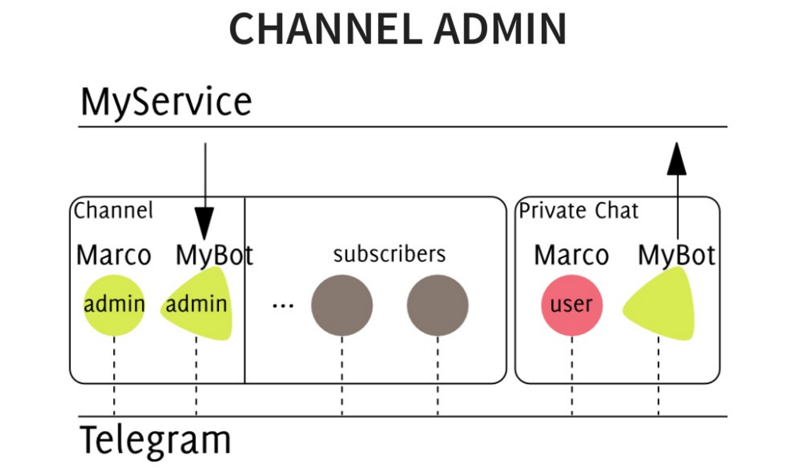

Ultilizzo più o meno smart di canali (e bot!) Telegram

Ciao Giulio!
Ho letto con piacere tuo articolo. Sono un “evangelista” Telegram come avrai evinto da lettura del mio articolo:
Ma sono anche critico rispetto ad un utilizzo “dumb” di alcune funzionalità, per esempio i canali: in questi giorni in Italia i canali sono di moda. Molte testate giornalistiche, stanno utilizzando lo strumento in modo (secondo me) “antico” ed inefficace e sono d’accordo con i punti che sollevi.
La questione principale la evidenzi tu stesso: i messaggi “broadcast” sono uno- a-molti e non permettono interazione (anche se pare che Telegram rilascerà nuova feature per permettere risposte dei lettori dei canali).
Canali Telegram come bacheche Facebook ? Oh noooooo!
I canali sono uno strumento “generalista” appunto e questo è il limite, che c’è in ambito giornalistico, ma anche di comunicazione marketing, advertising; pensare di fare pubblicità “virale” attraverso i canali (Telegram) è una pirlata pazzesca.
Invece la possibile novità, che qualcuno chiama concierge journalism (termine che a me non piace perchè pare alludere ad un “servilismo” informativo…), la novità dicevo potrebbe essere la realizzazione di chatbot che conversino con gli utenti finali di un certo servizio (giornalistico). P.S. Interessante articolo:
Ora, non credo proprio che sia un caso che Pavel Durov, CEO di Telegram, nell’ultimo speech a Barcellona abbia citato il bot di Forbes come esempio applicativo:
La mia opinione è che i bot che possano davvero fornire una informazione personalizzata all’utente, anche se, in questo bot sperimentale, realizzato nientemeno che da Forbes:
siano ancora ad un livello basic-basic! Realizzare applicazioni conversazionali è secondo me un trend enorme ma richiede (sia dal punto di vista informatico che del mind set autoriale/giornalistico) un nuovo modo di ragionare e lavorare.
Ragionando a caldo.
Respect
giorgio
Originally published on Medium.